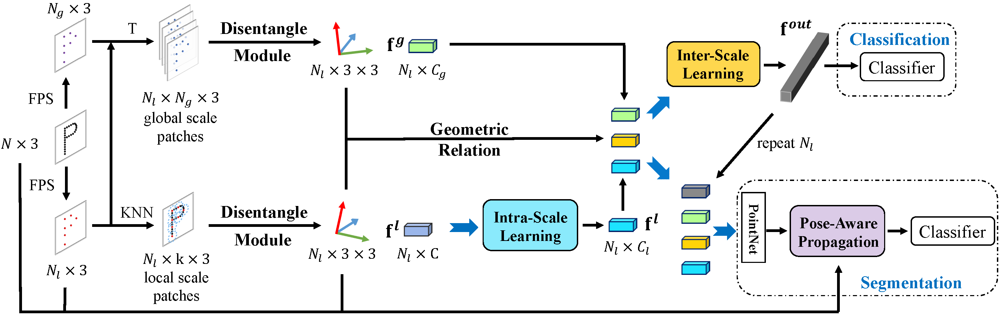

PaRot: Patch-Wise Rotation-Invariant Network via Feature Disentanglement and Pose Restoration
- School of Computer Science, University of Sydney, Australia

Overview
Recent interest in point cloud analysis has led rapid progress in designing deep learning methods for 3D models. However, state-of-the-art models are not robust to rotations, which remains an unknown prior to real applications and harms the model performance. In this work, we introduce a novel \textbf{Pa}tch-wise \textbf{Rot}ation-invariant network (PaRot), which achieves rotation invariance via feature disentanglement and produces consistent predictions for samples with arbitrary rotations. Specifically, we design a siamese training module which disentangles rotation invariance and equivariance from patches defined over different scales, e.g., the local geometry and global shape, via a pair of rotations. However, our disentangled invariant feature loses the intrinsic pose information of each patch. To solve this problem, we propose a rotation-invariant geometric relation to restore the relative pose with equivariant information for patches defined over different scales. Utilising the pose information, we propose a hierarchical module which implements intra-scale and inter-scale feature aggregation for 3D shape learning. Moreover, we introduce a pose-aware feature propagation process with the rotation-invariant relative pose information embedded. Experiments show that our disentanglement module extracts high-quality rotation-robust features and the proposed lightweight model achieves competitive results in rotated 3D object classification and part segmentation tasks.
Video
Main Results
- Accuracy on ModelNet40 classification under rotation: 91.0% (z/SO(3)), 90.8% (SO(3)/SO(3)).
- Accuracy on ScanObjectNN OBJ_BG classification rotation: 82.1% (z/SO(3)), 82.6% (SO(3)/SO(3)).
- Averaged mIoU on ShapeNetPart segmentation under rotation: 79.2% (z/SO(3)).